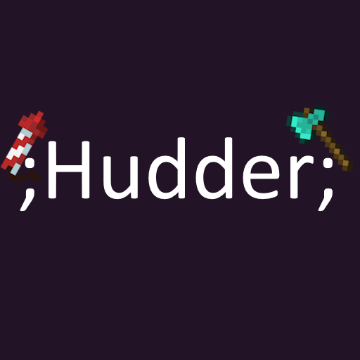

Hudder 8.4.0 Wiki
Explore
Home
Basic hud
Normal text
Character escaping and Color Codes
Text sections
Basic variables
Basic conditions
Advanced variables and Functions
Using methods
Advanced hud
If statements and loops
Strings
Arrays
Creating your own methods/functions
The Break variable
Inc, Dec and Boolean operators
Item components
;no_sys_var; and ;sys_var; methods
Custom rendering
Using colorvertices
Using texturevertices
"Continous" rendering
Drawing a circle
JavaScript
Sections? Functions!
List of functions and their descriptions
Variable list
Method list
Function list
Developers
Discord